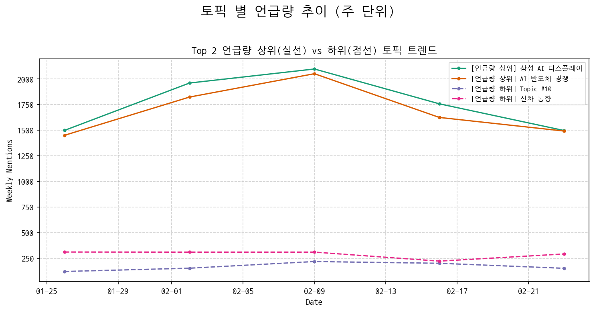
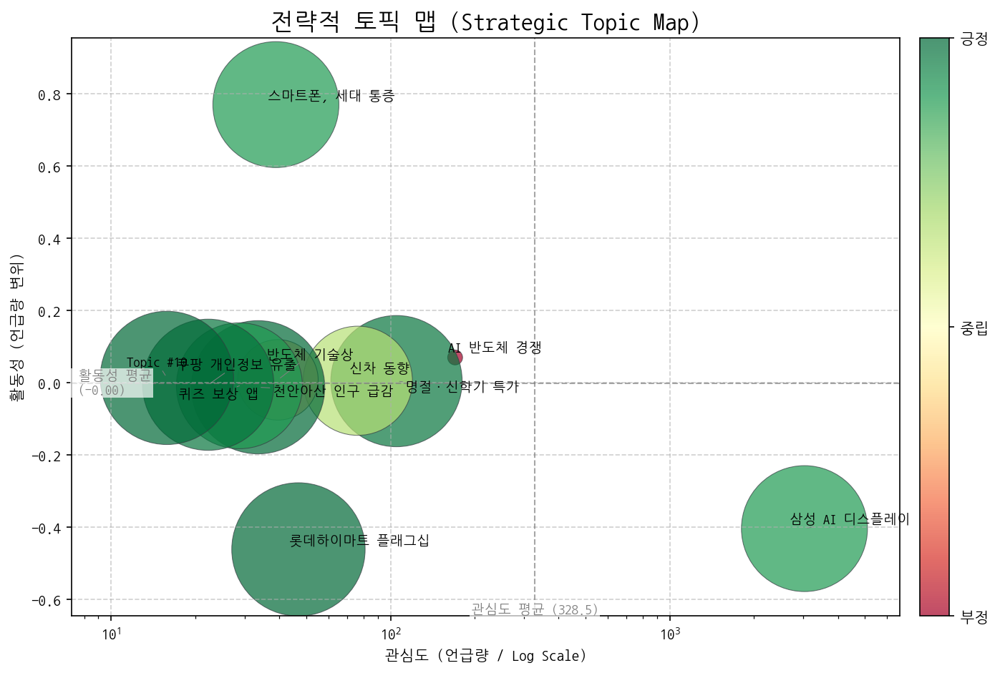
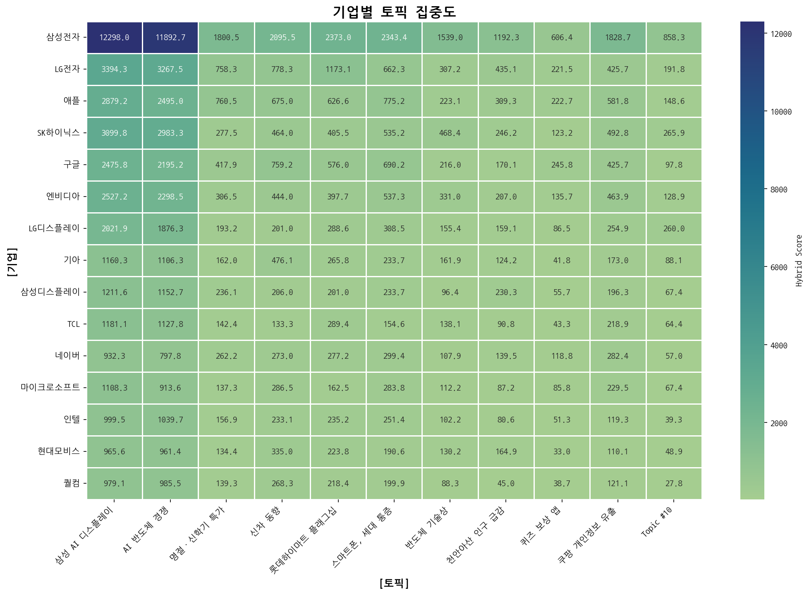
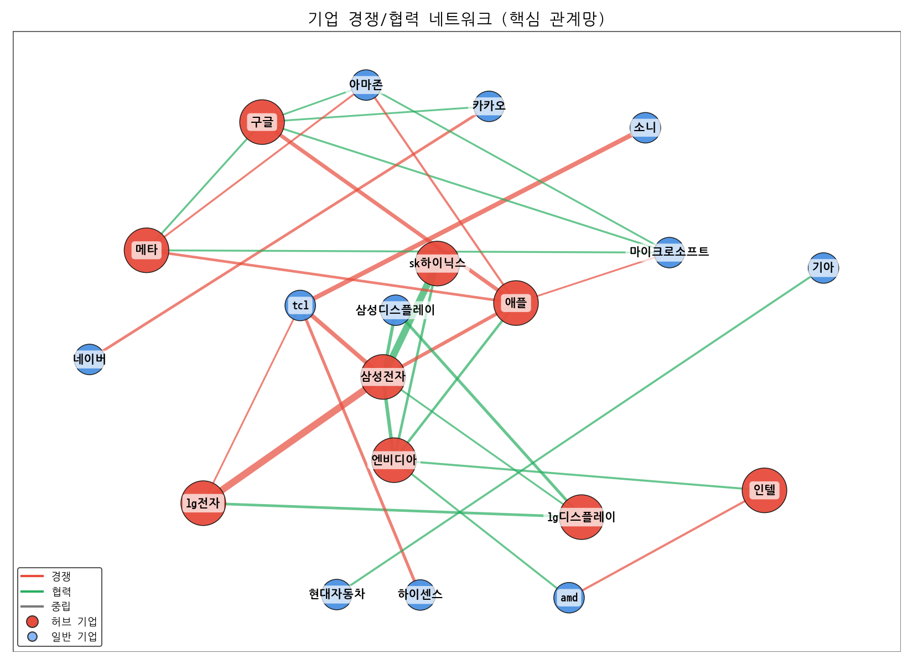
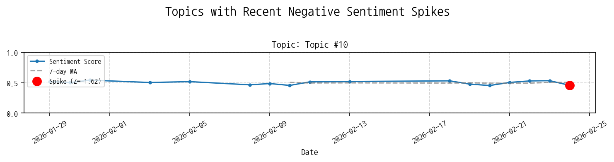
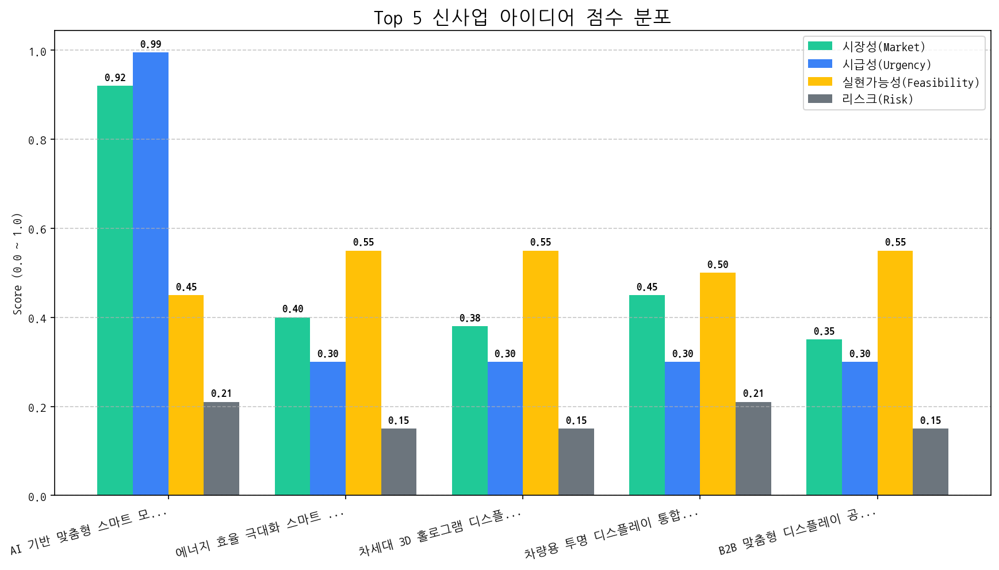

AI 분석 실패 (API 요청 한도 초과)
AI 분석 실패 (API 요청 한도 초과)

| 토픽 | 요약 | 핵심 키워드 |
|---|---|---|
| 삼성 AI 디스플레이 | 삼성전자의 AI 기술 기반 갤럭시 스마트폰 및 TV 디스플레이(OLED) 소재, 반도체 사업과 관련된 미국, 중국 시장에서의 투자, 실적, 검사, 기업 경쟁 및 기술 동향을 다룹니다. | ai, 갤럭시, 디스플레이 |
| AI 반도체 경쟁 | AI 반도체, OLED, 메모리 등 첨단 기술 및 부품 사업을 중심으로 삼성전자, 미국, 중국 등 글로벌 기업들의 경쟁 현황과 차세대 기술 동향을 다룹니다. | ai, 반도체, oled |
| 명절·신학기 특가 | 명절 및 신학기를 앞두고 이마트에서 인기 브랜드 상품을 특가에 할인 판매하며 다양한 혜택을 제공하는 행사 | 할인, 명절, 판매한다 |
| 신차 동향 | 벤츠 EQE, BYD 돌핀 등 신규 전기차 및 SUV, 픽업트럭 등 다양한 브랜드의 신규 자동차 모델 출시와 디자인, 기능에 대한 소식을 다룹니다. | 주행, suv, 벤츠 |
| 롯데하이마트 플래그십 | 롯데하이마트 잠실점이 유럽 라이프스타일 체험 공간으로 리뉴얼 오픈하며 프리미엄 가전 및 상품을 선보인다. | 브랜드, 브랜드의, 더후 |
| 스마트폰, 세대 통증 | 스마트폰 사용이 증가하면서 다음 세대는 학업 및 학습 능력 저하뿐만 아니라 경추 디스크, 어깨 통증 등 다양한 신체 증상을 겪을 수 있다는 우려를 담고 있습니다. | 학습, 배드, 스마트폰 |
| 반도체 기술상 | 30여 년간 반도체 기술 개발을 이끈 APS 회장이 엑시머 레이저 기술상 수상자로 선정되었으며, 이와 관련하여 브라질과의 협력 및 이재용 회장의 기여 등이 언급되었습니다. | 브라질, 곡률, 룰라 |
| 천안아산 인구 급감 | 충남 천안과 아산 지역에서 젊은 인구 유출과 일자리 부족으로 인해 주거 단지의 분양 및 평균 전용 면적에 영향을 미치고 있다는 내용입니다. | 천안, 전국, 인구 |
| 퀴즈 보상 앱 | 스마트폰 앱을 통해 퀴즈, 출석체크, 걷기 등의 활동을 수행하면 금전적 보상을 얻을 수 있는 재테크 방법에 대한 내용입니다. | 퀴즈, 정답은, 것입니다 |
| 쿠팡 개인정보 유출 | 쿠팡의 개인정보 유출 사건과 관련하여 경찰 조사, 재산 보유, 주식 신고 등에 대한 내용을 다루고 있습니다. | 쿠팡, 로저스, 주식 |
| Topic #10 | (LLM 해석 실패) | 등록을, 의대, 서울대 |

해당 토픽: AI 반도체 경쟁, 삼성 AI 디스플레이
권고 전략: AI 기술 기반 디스플레이 및 반도체 분야에서의 경쟁 우위 확보를 위한 R&D 투자 및 전략적 파트너십 강화가 필요합니다.
해당 토픽: 스마트폰, 세대 통증
권고 전략: 사용자 건강을 고려한 차세대 디스플레이 기술 개발 및 인체 공학적 디자인 혁신을 통해 시장 트렌드를 선도해야 합니다.
해당 토픽: 명절·신학기 특가, 롯데하이마트 플래그십
권고 전략: 소비 심리 변화 및 유통 채널 트렌드를 파악하여 맞춤형 마케팅 전략 및 프리미엄 디스플레이 경험 제공 방안을 모색해야 합니다.
해당 토픽: 신차 동향, 반도체 기술상
권고 전략: 잠재적 신규 시장(예: 차량용 디스플레이)에 대한 기술적 타당성을 검토하고, 핵심 기술력 확보를 위한 장기적인 연구 개발 투자를 지속해야 합니다.
AI 분석 실패 (API 요청 한도 초과)


| 관계 | 유형 | 강도(언급빈도) | 주요 연관 근거 |
|---|---|---|---|
| sk하이닉스 ↔ 삼성전자 | partnership | 1341 | 반도체 장비 관련주, '봄꽃만개' HPSP·원익홀딩스·SFA반도체·서진시스... [주식마감] 코스닥 1000선 돌파·사상 최고 시총… 유일로보틱스·리브스... 자율주행차 관련주, '룰루랄라 콧노래' KG모빌리티·MDS테크·캠시스... ... |
| lg전자 ↔ 삼성전자 | rivalry | 605 | 중·일 TV 동맹, 삼성·LG '긴장' 삼성전자, TV 출하 감소에도 글로벌 1위 수성 삼성전자, TV 점유율 1% 차로 1위 지켰다…TCL에 소니 더하면? |
| tcl ↔ 소니 | rivalry | 300 | 중·일 TV 동맹, 삼성·LG '긴장' 中 TCL, 소니와 손잡고, '삼성 아성'에 도전하다 소니TV 집어삼킨 中…LCD 넘어 韓 OLED 생태계도 '흔들' |
| 삼성전자 ↔ 엔비디아 | partnership | 216 | [미리보는 이데일리 신문]온라인 역직구 첫 3조 돌파…K커머스 세계공략... [브리핑] 신라젠·SNT에너지 급등… 외인·기관 '두산에너빌리티' 동반 ... [브리핑] 신라젠·SNT에너지 급등… 외인·기관 '두산에너빌리티' 동반 ... |
| lg디스플레이 ↔ ul | neutral | 39 | LG디스플레이 흑자전환 성공, 정철동 모바일 OELD로 올해 영업이익 1조 ... '좋은 화면'의 정의를 中이 내린다?…자연광 표준 던진 BOE, '룰 체인저'... LG디스플레이, 글로벌 인증기관서 OLED '휘도 유지율 100%' 입증 |
AI 분석 실패 또는 특이사항 없음.
AI 분석 실패 (API 요청 한도 초과)

대상: AI 분석 중...
전략: AI 분석 중...
대상: AI 분석 중...
전략: AI 분석 중...
대상: AI 분석 중...
전략: AI 분석 중...
대상: AI 분석 중...
전략: AI 분석 중...
AI 분석 실패 (API 요청 한도 초과)
AI 분석 실패 (API 요청 한도 초과)
| idea | value_prop | score | target_customer |
|---|---|---|---|
| AI 기반 맞춤형 스마트 모니터 패널 | 사용자의 작업 효율성과 시각적 편안함을 극대화하는 AI 기반 지능형 모니터 패널입니다. 사용자의 행동을 학습하여 자동으로 최적의 화면 설정을 제공하며, 생산성 향상과 눈의 피로 감소를 동시에 지원합니다. | 6.5 | 북미 빅테크 기업 (PC 및 모니터 제조사) |
| 에너지 효율 극대화 스마트 윈도우 패널 | 건물 에너지 소비를 획기적으로 절감하고 쾌적한 실내 환경을 조성하는 스마트 윈도우 패널입니다. 외부 환경 변화에 능동적으로 반응하여 단열 성능과 빛 투과율을 최적화합니다. | 3.4 | 글로벌 건설사, 스마트 빌딩 솔루션 제공업체 |
| 차세대 3D 홀로그램 디스플레이 모듈 | 별도의 착용 장비 없이도 현실감 넘치는 3D 홀로그램 콘텐츠를 구현하는 혁신적인 디스플레이 모듈입니다. 시공간의 제약을 넘어선 새로운 차원의 시각 경험을 제공합니다. | 3.4 | 글로벌 엔터테인먼트 콘텐츠 제작사, 교육용 VR/AR 솔루션 기업 |
| 차량용 투명 디스플레이 통합 솔루션 | 차량 내부 디자인을 해치지 않으면서 몰입감 있는 정보 제공 및 사용자 경험을 극대화하는 럭셔리 투명 디스플레이 솔루션입니다. 차량의 미관을 살리면서도 최첨단 기술을 구현하여 프리미엄 가치를 더합니다. | 3.3 | 글로벌 완성차 OEM (차량 인포테인먼트 시스템 개발 부서) |
| B2B 맞춤형 디스플레이 공정 최적화 서비스 | 고객의 특정 요구사항에 최적화된 디스플레이 패널을 맞춤 설계 및 생산하여, 제품 혁신과 시장 출시 기간 단축을 지원합니다. 당사의 전문성을 통해 고객은 디스플레이 제조의 복잡성을 해소하고 핵심 역량에 집중할 수 있습니다. | 3.3 | 의료기기 제조사, 산업용 장비 개발사, 특수 목적 디스플레이 요구 기업 (중견/대기업) |

(데이터 없음)